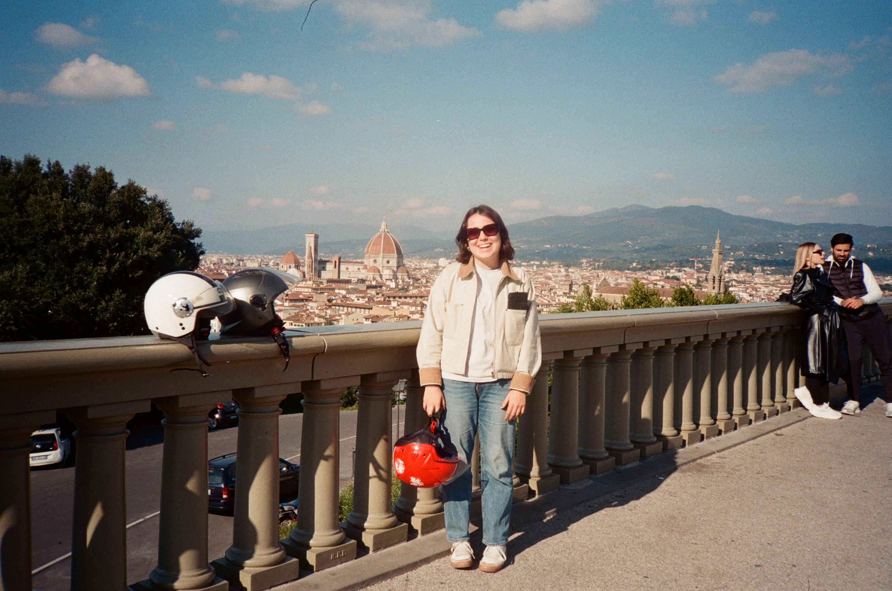
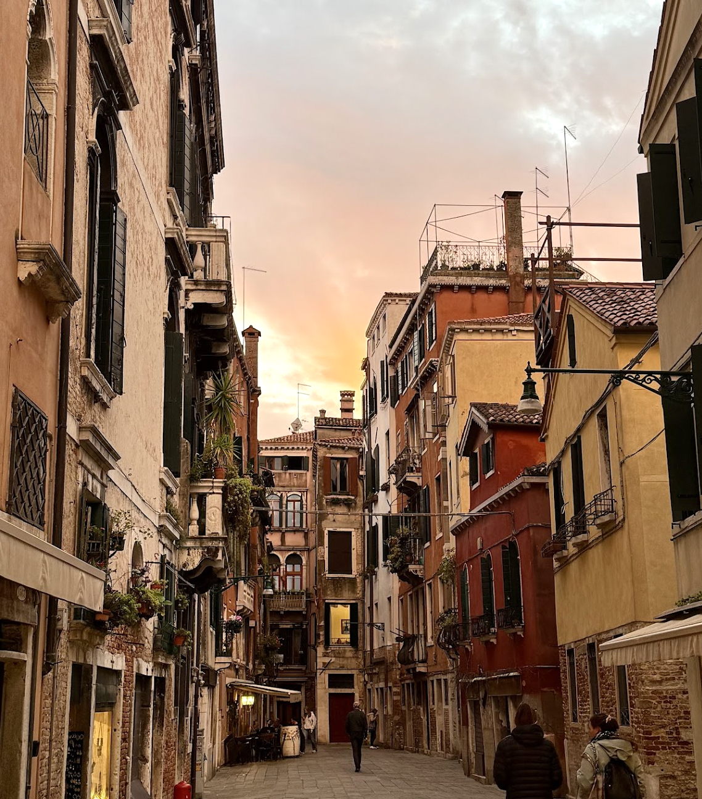
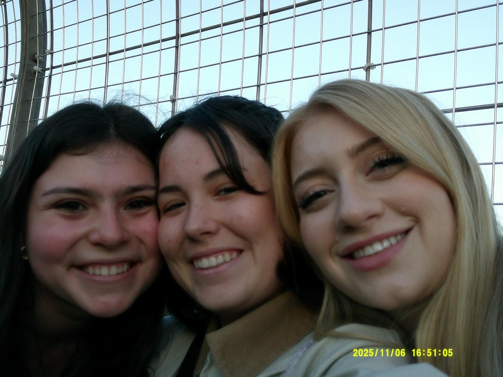
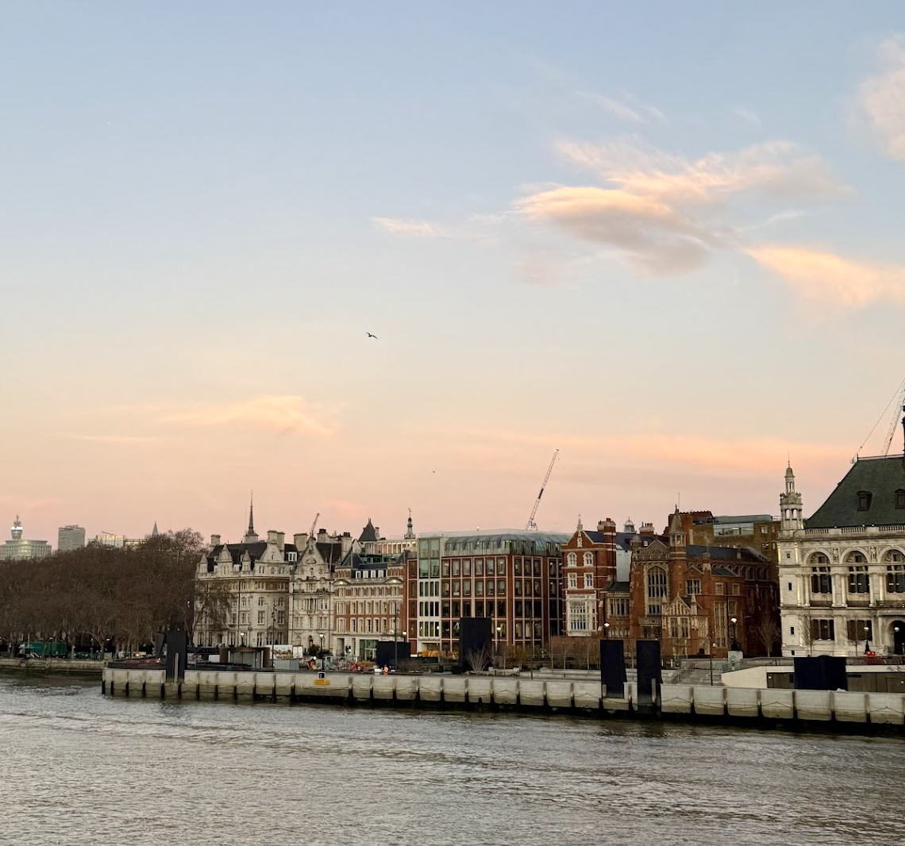
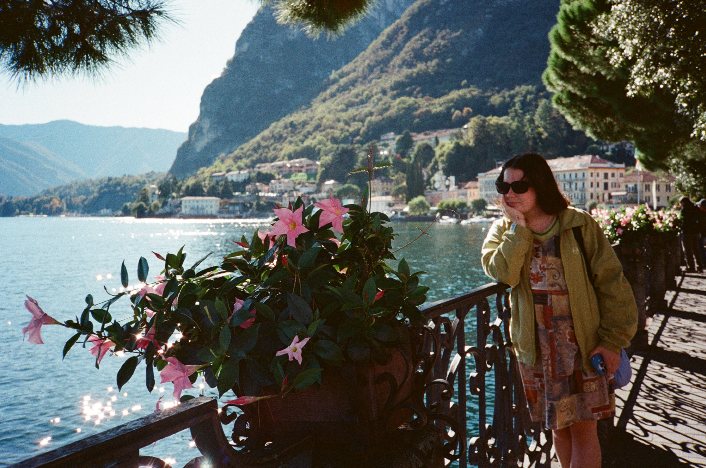

Why I Studied Abroad
After my freshman year of college, I wanted a change of scenery. I chose to study abroad with hopes that I would meet lifelong friends and gain invalueable business and life experience. My time in Italy (and the rest of Europe) did all this and more! I was pushed outside my comfort zone, and grew in ways I never expected. I'm so glad I went!
Highlights
- Favorite Places
- Florence, Italy
- Prague, Czech Republic
- Paris, France
- London, England
- Amsterdam, Netherlands
- Wengen, Switzerland
- Biggest Challenges
- Language barrier
- Navigating transportation (never trust the bus or RyanAir)
- Being far from home
Photo Gallery





Italian Travel Guide

What I Learned
This experience taught me independence, adaptability, and how to embrace uncertainty. I came back with many meanful relationships, and ultimately more confident and with a broader perspective of the world.